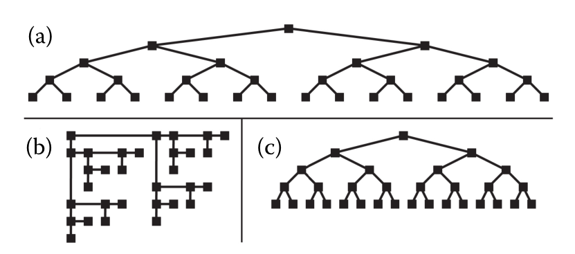
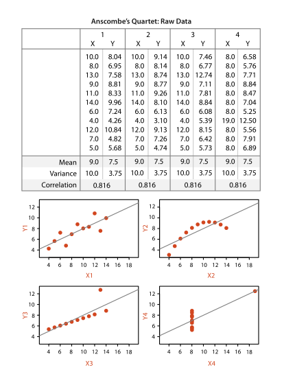

Computer-based visualization systems provide visual representations of datasets designed to help people carry out tasks more effectively.
基于计算机的可视化系统提供数据集的可视化表示，旨在帮助人们更有效地执行任务。
whatdata the user sees
why the user intends to use a vis tool
how the visual encoding and interaction idioms are constructed in terms of design choices.
input what data is shown
output data is produced as a result of using the vis tool.
Application
Visualization is suitable when there is aneed to augment human capabilities rather than replace people with com-putational decision-making methods.
当需要增强人的能力而不是用计算决策方法取代人时，可视化是适合的。
Key Point
The design space of possible vis idioms is huge, and includes the consid-erations of both how to create and how to interact with visual representations.
Vis design is full of trade-offs, and most possibilities in the design space are ineffective for a
particular task, so validatingn. 确认 the effectiveness有效性 of a design is both necessary and difficult.
Vis designers must take into account three very different kinds of resource limitations:
those of computers
对于设计容量外更大数据量的兼容性
尽可能小的占用内存，结余空间给其他软件
交互式响应 加快动态渲染 （游戏厂商或许擅长这个）❓
of humanspowerful pattern detection properties of the human visual system
人类有限的注意力、短期记忆量
and of displays.
信息密度将影响可读性
用更低的信息密度换取了对于高度的可读性
有限的屏幕不能展示无限的数据
Vis usage can be analyzed in terms of why the user needs it, what data is shown, and how the idiom个人、艺术形式等的风格，特色 is designed.
Goal
扩充所学的可视化方法库，然后从中选出最合适的
掌握方法框架 搭建脚手架
Kinds of Uses
You can make a tool intended for transitional 过渡的use where the goal is to “work itself
out of a job”, by helping the designers of future solutions that are purely computational.
gaining a clearer understanding of analysis requirements
vis tools targeted at specific real-world domain problems is often a much crisper understanding of the user’s task
a vis tool aimed at the designers of a purely computational solution, to help them refine, debug, or extend that system’s algorithms or under-stand how the algorithms are affected by changes of parameters.
A vis tool to help the algorithm developers analyze its performance might be use-
ful to these developers, but not to people who eventually buy the software.
a vis tool for end users in conjunction with other computational decision making to illuminate whether the automatic system is doing the right thing according to human dgement.The tool might be intended for interim use when making deployment decisions in the late stages of a transition, 该工具可能用于在过渡后期进行部署决策时的临时使用，
You can also make a tool intended for long-term use, in a situation where there is no intention of replacing the human any time soon.
supporting people who want to explain something that they already know to others
speed up and improve a user’s ability to generate and check
1.3 Why Have a Computer in the Loop?
large datasets
seeing how datasets change over time
saves human effort compared to manual creation
1.5 Why Depend on Vision?
并行处理
提供大型信息空间的概述
1.6 Why Show the Data in Detail?
exploring the data to find patterns,both to confirm expected ones and find unexpected ones.
assessing the validity of a statistical model, to judge whether the model in fact fits the data
用合适的方法分析合适的数据
a single summary is often an oversimplification that hides the true structure of the dataset, applies even more to large and complex datasets.